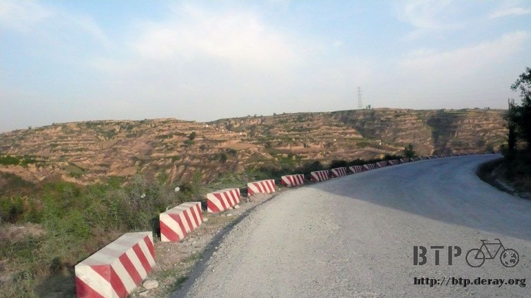
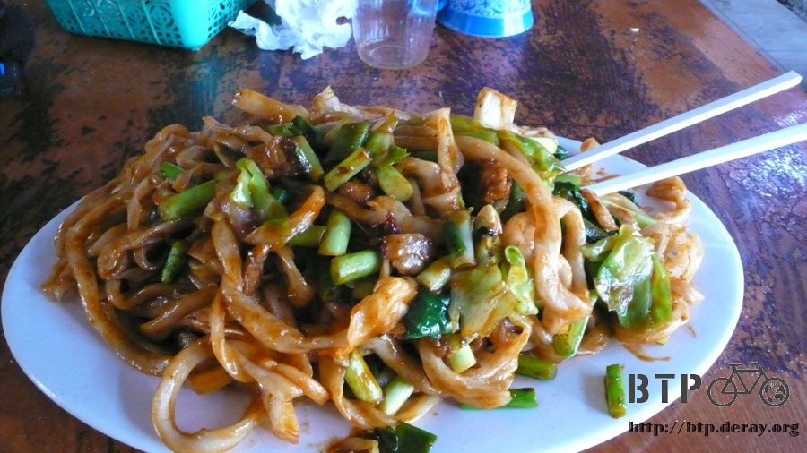
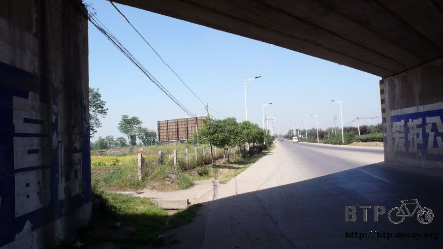

Warm Up is Over
The road leaving Tongguan was so terrible that it made me wanted to cry.
Filled with broken down gravels and dirt, it was a torture whether it was going up hill or down hill.
A few kilometers later, the challenge of up hill climbing was finally over.
The road became nice and smooth and it was much easier on my feet.

Next, all I saw was Mount Hua mountain ridge.
Tourist hotels were everywhere with non-stop tour buses coming and going.
Mount Hua was really beautiful looking from the mountain foot.
I don’t know what I would see when I climb up to the top of hill.


The distance I had to ride today is not shorter than yesterday.
But without going up and down the hills, it is definitely easier to accomplish.
Except, here is the problem. Since I am riding westbound, the sun is in my face after 2 or 3 o’clock in the afternoon.
Even when I have UV400 extra strength sunglasses on, I can barely keep my eyes open for a few hours until the end of day.
I finished all my dry goods, except the brick flatbread.
Every time when I eat one of these brick flatbread, my stomach would complaint. So I am saving them for emergency only.
After 9 o’clock in the morning, I saw a restaurant with white smoke.
The boss lady asked me what I want.
Looking at the long list of menu and then I saw a kid having rice noodle and it looked delicious. So I ordered the same.

And it was a right decision. It tasted really good.
It had a firm texture of rice noodle with broth, shredded seaweed, dried shrimp and top with cilantro. Excellent!

Because of the strong sunray, it made me want to buy a floral sun hat.
When I get to Xi’an, I must go shopping and find me a suitable sun hat.
Otherwise, I will become a dried squid by the time I get to Urumchi
A big red watermelon cost 2 RMB for 1 kilogram.
I asked the owner to cut 4 kilograms of melon and enjoyed the melon while avoiding the heat.
I told the owner that I am from Beijing.
Not after a couple of sentences, the owner questioned, “You are not from Beijing!”
What? How do you know? Is my accent ready that bad?

I had stir-fried noodle for lunch at a small restaurant.
The owner asked me what kind of noodle I want. Thin noodle or pulled noodle?
Without a doubt, pulled noodle please because it looked delicious.
But I waited for half hour for a dish of stir-fried pulled noodle.
I watched the owner kneeling the dough, cutting the dough into strips of 2 centimeters thick,
and then pulling them by hand one by one until they were as thick as a noodle.
He was really pulling one by one and then holding them in his hands and pulled.
And then, BAM! Slapped them on the table for the final touch.
Now you have one order of hand “pulled” noodle.
Wow…I though pulled noodle was made by cutting the dough with knifes, not pulling one by one by hand.
The order that was just finished wasn’t even mine; it was someone else who has ordered before me.
I still had to wait for mine.
Every one of those orders was freshly made when the order was placed, so I waited for a long long time for my noodle.
Before the boss lady prepared my noodle, she asked me if I wanted it spicy and I said NO.
But she still cooked with red hot oil.
So of course, it was very spicy. My tong lost feelings after just two bites.
Finally I finished the entire noodle by drinking a lot of tea.

The sun was very strong and there were no shade for me to hide.
Once in a while I could hide under an overpass.
Looked at the blazing sun, it was only beginning of May and the temperature was already this hot.
I don’t know what would happen if I began my trip later.

The reason that I have been buying sugar popsicles was I thought these popsicles were only 0.50 RMB because they were sugar flavor.
That’s why they were cheap. Oh, was I wrong.
All flavored are 0.50 RBM, not just sugar flavor.
After I discovered this secret, I had 8 popsicles today.
They were sugar, cantaloupe, red bean, green bean, milk and strawberries flavor.
All 0.50 RBM each!
Riding bike facing west, when I almost arrived at Xi’an, the road all the sudden became terrible.
After several of turns, finally I arrived at the super huge city – Xi’an.

Xi’an might be even bigger than Beijing.
It is really huge. It might be as big as Taipei and all the surrounding cities, which is the northern Taiwan.
But this is just a city.
Even though the city is big and beautiful, the roads are very well structured, but the prices are suddenly went up sky high.
I checked a few “guest houses” along the way and there were over 100 RMB per night.
What? That’s ridiculous!
And when the staff told me the price, obviously they were thinking,
“Why do you even bother to ask the price? You can’t afford it!”
Don’t you dare to look down at me like that! I really want to throw hundred dollar bills at her face.
But I shouldn’t waste money like that, so I continued to look for cheaper hotels.
Continued checking prices and moved toward the direction of the train station.
This is because in the next couple of days, I will take buses near the train station for sightseeing.
The closer I get to the train station, the more convenience it will be.
There are many hotels here, so I have to hurry up and check as many hotels as possible to find one that is in my budget.
Found one with 40 RMB per night. It was a little expensive so I negotiated with the owner.
If I stayed for 3 nights, can I get a discount?
The owner said that they are almost booked so it is hard to give me a discount.
After negotiation, finally we agreed on 30 RMB per night for 3 nights.

After seen the room, I understood why it was 40 RMB. This was a nice double bed room.
It looks like I will have a good night sleep for the next three days….
Tonight’s dinner was very casual. It was a couple of envelopes of Milo chocolate with brick flatbread broken into small pieces
and then mixed with hot water provided by the hotel, now I had home-made chocolate oatmeal.
After brick flatbread became nice of soft, finally I could eat it without getting upset stomach and it was very filling, too.
It took me 13 days to get to Xi’an from Beijing.
From Beijing to Xi’an was my B2P warm up trip. The real challenge will start from Xi’an.
Now the warm up is over. The condition of equipment and Dido are very good.
My body is healthy. The extent of warm up is just right.
I had a late night snack. The streets are still very busy at 10, 11 o’clock at night. Not like a ghost town at all.
I found a restaurant selling the “must try” lamb Bao Mo.
That was expensive! 12 RMB for one bowl. If it was with beef, then it was 9 RMB.
It was bun cut into very small pieces, mixed with very hot broth and top with slides of lamb. It also has cellophane noodle in the bowl.
Garnished with hot pepper sauce and vinegar pickled garlic which were perfect with lamb.
After soaking with broth, bao mo tasted very good.
I would recommend this dish, except it was expensive.
Tomorrow after waking up, I will visit terracotta solders. I was very excited and looking forward to it.
I asked the hotel owner for the direction. From where I stayed to the train station will only take 10 minutes by foot.
I can just take a bus. But the ticket for terracotta solders is very expensive. 90 RMB per ticket.
Plus other places, such as Qin Emperor’s Tomb. Hmmmm….how much money should I bring?